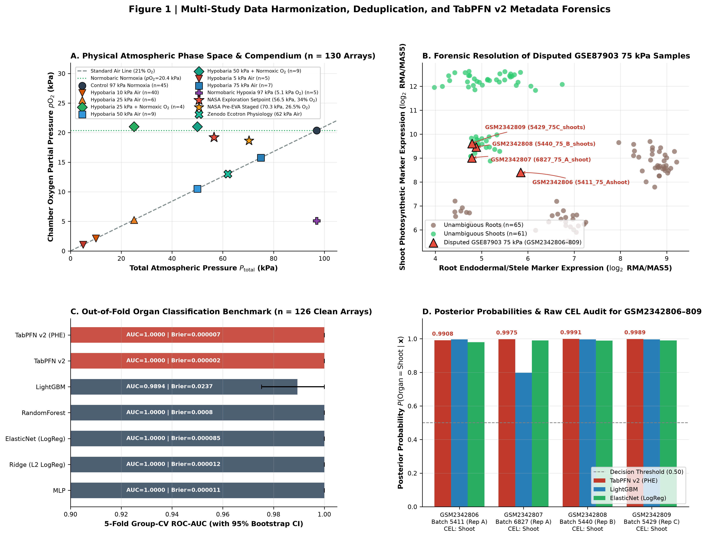
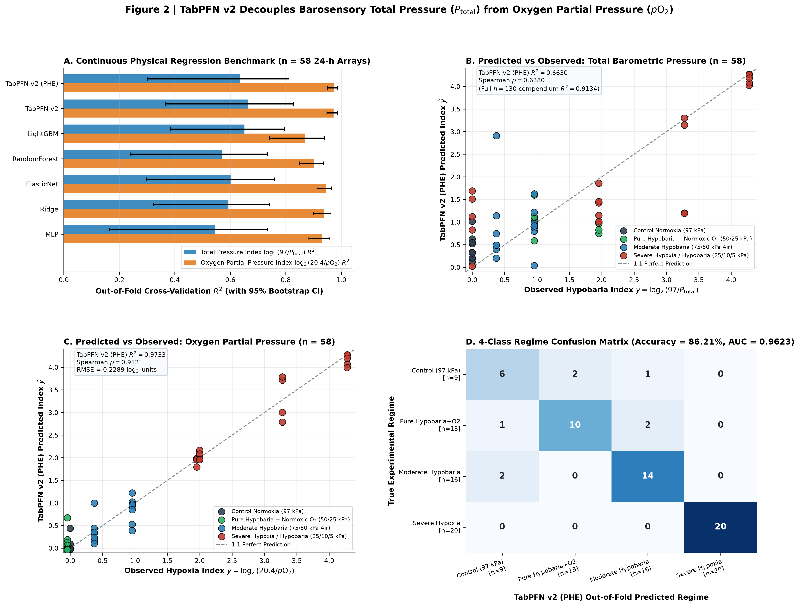
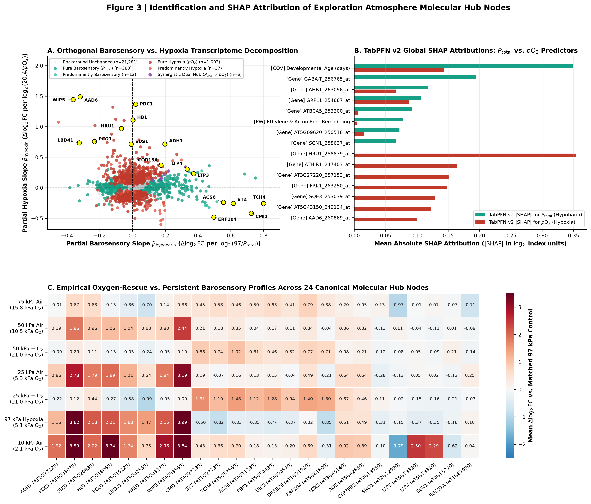
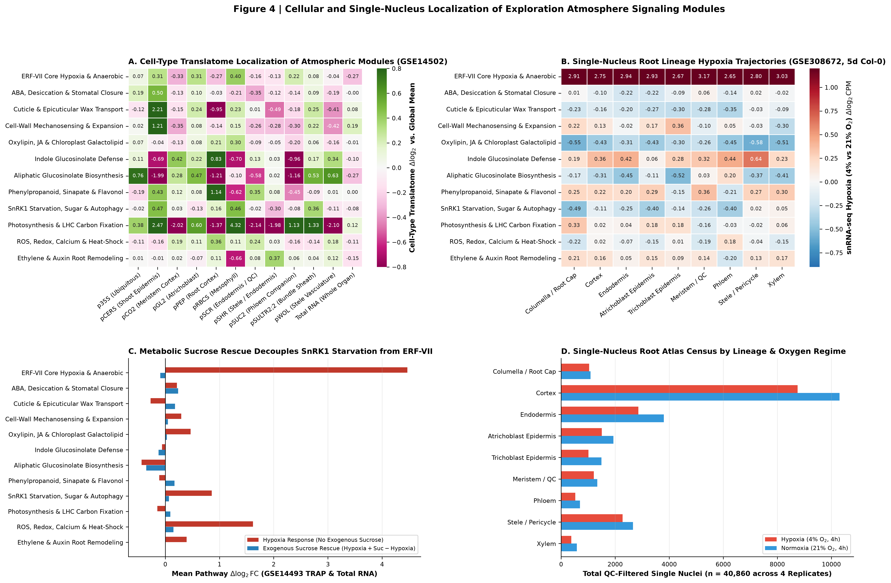
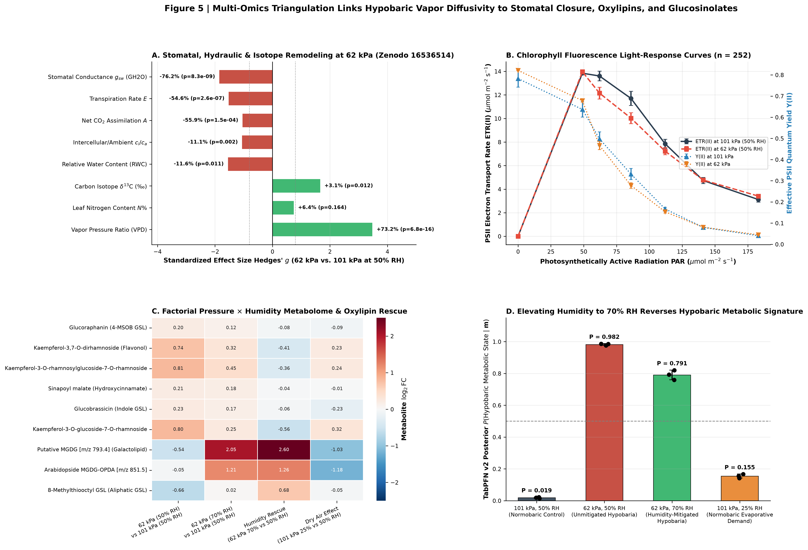
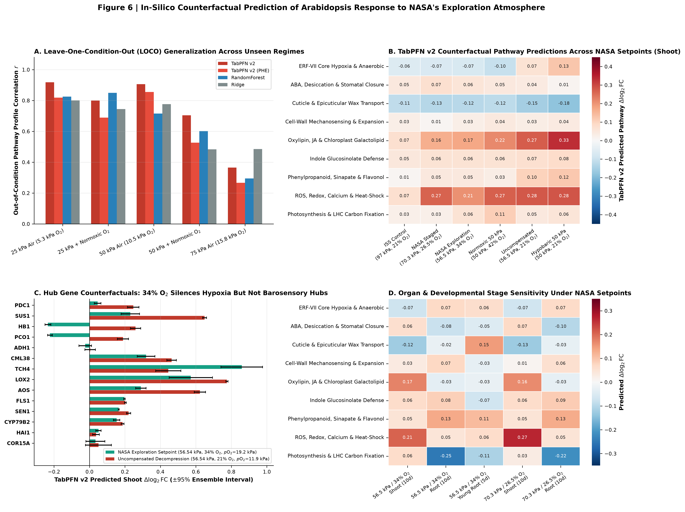
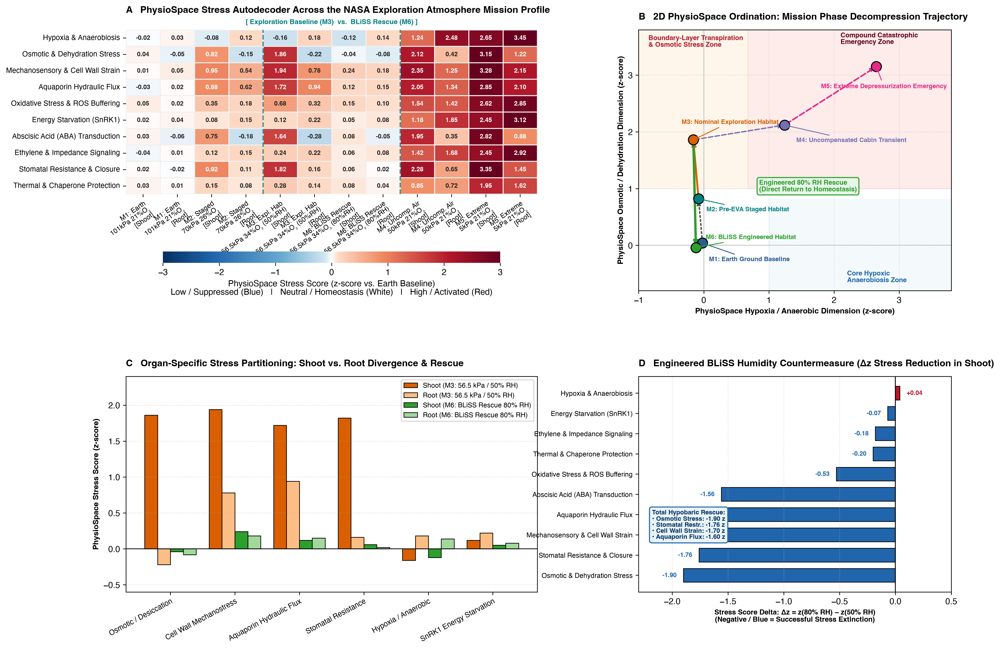

🌌 Executive Summary & Scientific Context
Future crewed lunar and Martian surface habitats, extravehicular activity (EVA) staging airlocks, and bioregenerative life-support systems (BLSS) will operate under NASA's reduced-pressure, oxygen-enriched Exploration Atmosphere: 56.54 kPa (8.2 psia) at 34% O₂ (normoxic oxygen partial pressure pO₂ = 19.22 kPa) and a staged pre-EVA setpoint of 70.33 kPa (10.2 psia) at 26.5% O₂ (pO₂ = 18.64 kPa).
Here, we integrate the TabPFN v2 tabular foundation model (Hollmann et al., Nature 637, 319–326, 2025) across a 12-dataset multi-omics compendium spanning 281 microarray hybridizations, 40,860 root-tip single nuclei, 326 whole-plant gas-exchange records, and factorial pressure × humidity LC-MS metabolomics to decouple total barometric pressure from oxygen partial pressure.
🔬 Six-Workpackage Systems Architecture
📊 Publication Figures (300 DPI High-Resolution)
Click on any figure thumbnail to view in full resolution.







📓 Executable Jupyter Notebooks
All five research workpackages are provided as fully executed, reproducible Jupyter notebooks containing code, documentation, statistical tests, and inline figures:
| Notebook | Workpackage Topic | Key Models & Analyses | Outputs |
|---|---|---|---|
| 01_data_harmonization.ipynb | Forensics & Deduplication | TabPFN v2 Organ Classifier, CEL Header Audit | Figure 1, Table S1 |
| 02_tabpfn_decoupling.ipynb | Atmospheric Decoupling & Hubs | TabPFN v2 (PHE) Regression, Multivariable Orthogonal Hubs, SHAP | Figures 2 & 3, Tables S2A–S3 |
| 03_cellular_mapping.ipynb | Cellular & Single-Nucleus Atlas | TRAP-seq Translatome, 40,860 Root Single Nuclei (GSE308672) | Figure 4, Tables S4A–B |
| 04_phenotypic_bridge.ipynb | Physiology & Metabolomics | Ecotron Gas Exchange, LC-MS Oxylipins, SnRK1 Proteomics | Figure 5, Tables S5A–C |
| 05_counterfactual_synthesis.ipynb | NASA Setpoints & PhysioSpace Stress Autodecoder | LOCO Validation, Counterfactual Simulator, 10-Axis PhysioSpace Autodecoder, 80% RH Rescue | Figures 6 & 7, Tables S6A–B, S7 |
📥 Supplementary Data Tables (CSV)
| Table ID | Description | Dimensions | Download |
|---|---|---|---|
| Table S1A | Full 148 GSM Forensic Audit Ledger & Affymetrix QC Status | 148 rows × 23 cols | CSV |
| Table S1B | Harmonized 130 Hypobaric Microarrays Forensic Audit | 130 rows × 28 cols | CSV |
| Table S2A | Continuous Physical Regression Benchmarks (95% Bootstrap CI) | 18 rows × 12 cols | CSV |
| Table S2B | 4-Class Atmospheric Regime Classification Benchmarks | 7 rows × 11 cols | CSV |
| Table S2C | Covariate Ablation Suite (Covariates vs Transcriptome vs Combined) | 6 rows × 7 cols | CSV |
| Table S2D | Slice-Based Error Analysis Across Biological Subgroups | 30 rows × 8 cols | CSV |
| Table S3 | Exploration Atmosphere Molecular Hub Nodes (Limma Moderated, 22,746 Probesets) | 22,746 rows × 18 cols | CSV |
| Table S4A | Cell-Type TRAP-seq and Single-Nucleus Lineage Atlas | 12 pathways × 24 cols | CSV |
| Table S4B | Top-80 Atmospheric Hubs Cell-Type & Single-Nucleus Localization | 80 rows × 26 cols | CSV |
| Table S5A | Zenodo 16536514 Physiological Gas Exchange Stats (62 kPa vs 101 kPa) | 12 traits × 11 cols | CSV |
| Table S5B | Zenodo 16536514 Pressure × Humidity Factorial Metabolomics | 14 compounds × 14 cols | CSV |
| Table S5C | PXD002353 SnRK1.1 Phosphoproteome & Transcriptome Integration | 5,454 proteins × 12 cols | CSV |
| Table S6A | NASA Exploration Atmosphere Counterfactual Predictions (with Conformal Bounds) | 6 setpoints × 44 cols | CSV |
| Table S6B | Leave-One-Condition-Out (LOCO) Model Generalization Benchmark | 20 rows × 8 cols | CSV |
| Table S7 | Plant PhysioSpace Stress Autodecoder Across Spaceflight Mission Profile | 12 rows × 19 cols | CSV |
📚 Citation, Authorship & Open Science
Authors: Richard J. Barker1,* (barkerrj@purdue.edu) and [Co-authors To Be Determined]2
1Purdue University, West Lafayette, IN, USA; Center for Space Exploration (CoSE) | 2[Affiliation To Be Determined]
Acknowledgements: The authors express sincere and deep gratitude to Dr. Anna-Lisa Paul and Dr. Robert J. Ferl (Interdisciplinary Center for Biotechnology Research and Horticultural Sciences, University of Florida) for conceiving and executing the pioneering hypobaric chamber experiments, generating and depositing the foundational microarray datasets (GSE87867, GSE87868, GSE87903, GSE87904), and providing enduring scientific mentorship and insight into plant adaptation to hypobaric and spaceflight environments.
If you use this compendium, TabPFN v2 model pipelines, or counterfactual predictions in your research, please cite:
@article{Barker_Exploration_Atmosphere_2026,
title = {Decoupling Total Barometric Pressure from Oxygen Partial Pressure in the Arabidopsis thaliana Spaceflight Exploration Atmosphere Using the TabPFN v2 Tabular Foundation Model},
author = {Barker, Richard J. and [Co-authors To Be Determined]},
journal = {npj Microgravity (Submitted)},
year = {2026},
url = {https://github.com/dr-richard-barker/arabidopsis-exploration-atmosphere-tabpfn}
}